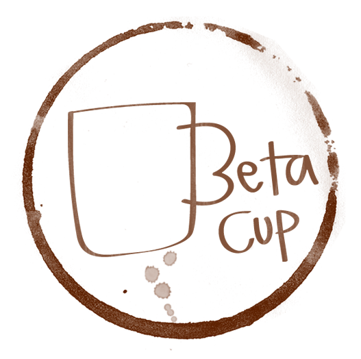
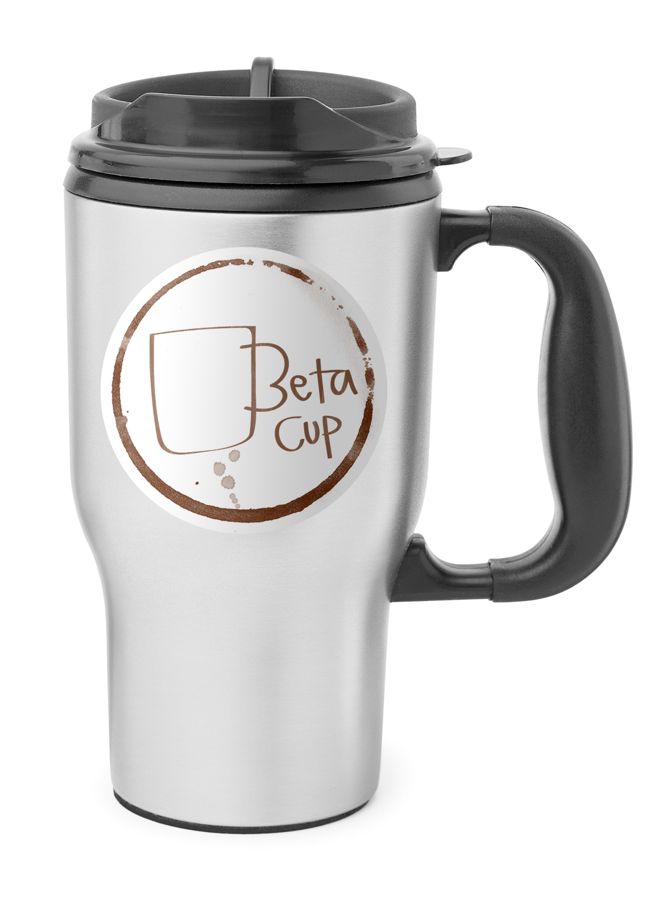
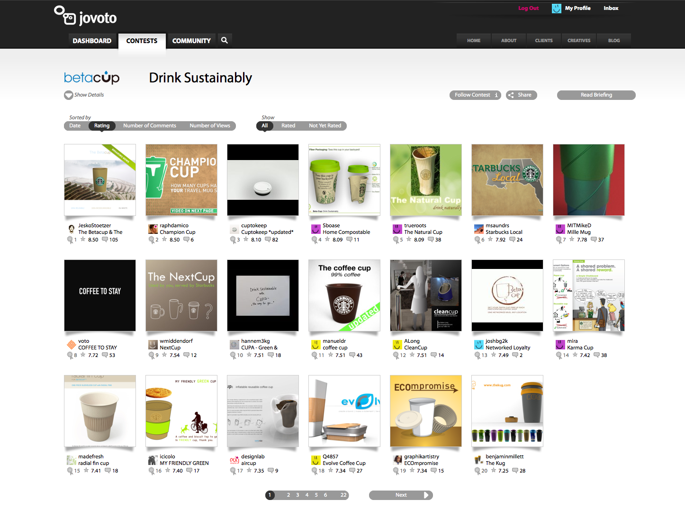
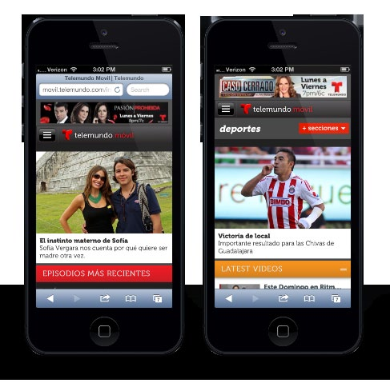
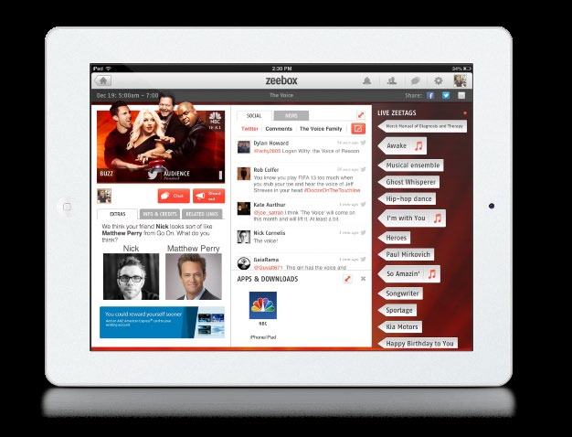

Archive
A couple of personal and independent projects from well before the career case studies above — kept here for the record, not because they're the sharpest work, but because they're where a lot of the instincts started.
01 — Signal Clock
Personal Project — Quarantine Build
An interactive clock for the home that listens to its surroundings and turns ambient audio into the clock's hands — displayed live as waveforms. Designed for anywhere people gather and sound is made: home, office, media room. Concept has roots going back a few years; this build started during quarantine.
Type
Personal / Ongoing
Hardware
Orange Pi PC (Armbian), prev. Raspberry Pi 3B+
Software
Processing
Formerly
Groove Clock (2010–2012)
Recognition
Figment NYC 2012, Governors Island — site B-1, as Groove Clock
In the wild
Installed behind reception desks at a couple of startups
The Concept
Signal Clock listens to its surroundings and uses live audio input to display the clock's hands as waveforms. The video above shows the very first iteration of the current physical form — there's still a lot of work to do. The idea itself goes back further: this is the same project first built and shipped as Groove Clock, rebuilt during quarantine as dedicated hardware and renamed Signal Clock.
Hardware
Software
Process & Artifacts
What's Next
History — as Groove Clock
Before it was Signal Clock, this project shipped as Groove Clock — an iPad app and public installation that used ambient microphone input to manipulate the hands of an on-screen clock. It launched on the App Store, was shown at Le Poisson Rouge's interactive art exhibition in 2011, and was installed at Figment NYC 2012 on Governors Island (site B-1, Nolan Park), per Figment's official site map. The quarantine-era rebuild in the video above moved the same idea off the iPad and into dedicated hardware, under the new name Signal Clock.
02 — Networked Loyalty
The Betacup Challenge, 2010
An entry to the Betacup's "Drink Sustainably" challenge — a Starbucks-sponsored, jovoto.com-hosted open contest that asked creative thinkers to help solve the disposable coffee cup waste problem. My entry, Networked Loyalty, proposed a social/incentive scheme to encourage cup reuse. It was named one of five Community Rating Winners, selected by public vote.
Challenge
The Betacup — "Drink Sustainably"
Sponsor
Starbucks Coffee Company
Platform
jovoto.com
Year
2010
Prize
$2,000
Result
1 of 5 winning concepts, out of thousands of entries
Press
New York Times, Core77, Popsop
The Challenge
The Betacup — backed by Starbucks as part of its push to serve 100% of hand-crafted beverages in reusable or recyclable cups by 2015 — launched an open contest on jovoto.com on April 1, 2010, asking entrants to solve the disposable cup waste problem. 430 entries came in, ranging from biodegradable single-use cups to edible "coffee balls" to social incentive schemes for reuse. Starbucks put up $20,000 in prizes: $10,000 to the jury's top pick, and $2,000 each to five entries chosen by public/community rating.
The Concept
Networked Loyalty proposed placing RFID-tagged stickers on customers' existing reusable coffee mugs. Scanning the mug at the point of sale would eliminate the waste created by disposable cups while also updating a digital version of Starbucks' paper "10th cup free" punch card automatically — no card to lose, no stamp to forget, and a direct incentive to bring a reusable mug back every time.
Entry & Artifacts



Outcome
Announced June 17, 2010: the jury's overall pick was Karma Cup (Mira Holley, Nick Partridge, Gillian Langor, Mira Lynn, Zarla Ludin, Ruth Prentice), with special mentions for The Betacup & The Betacup Campaign (Jesko Stoetzer), Champion Cup (Raph D'Amico), and Band of Honor (Scott Moorhead). Networked Loyalty was named one of five Community Rating Winners, selected by public vote alongside The Betacup & The Betacup Campaign, Cuptokeep, The NextCup, and The Neutral Resource Coffee Cup. Networked Loyalty went on to pick up coverage in the New York Times and Core77, in addition to the contest recaps below.
Press
03 — Telemundo Mobile Web
NBCUniversal · 2011
A mobile web redesign for Telemundo.com — built as a reusable template that was later adopted across USA Network, Syfy, Oxygen, and Bravo.
Client
NBCUniversal
Year
2011
Impact
Template reused across USA, Syfy, Oxygen, Bravo

04 — Lookalikes
NBCUniversal · Zeebox · 2012–13
A facial-recognition R&D micro app built inside the Zeebox second-screen platform — matching users' Facebook friends to NBC talent.
Client
NBCUniversal / Zeebox
Year
2012–13
Type
Facial Recognition · Micro App
